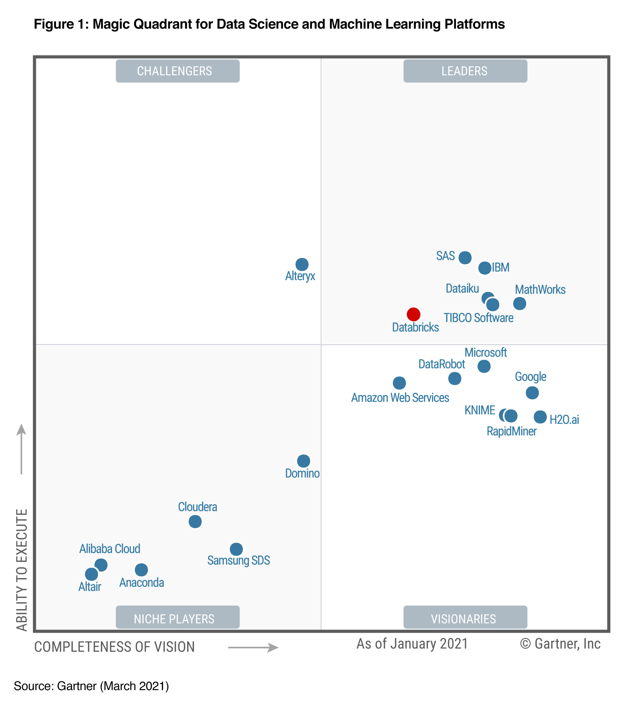
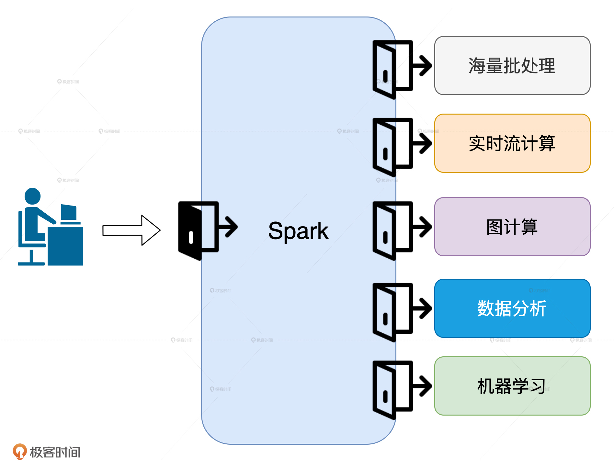
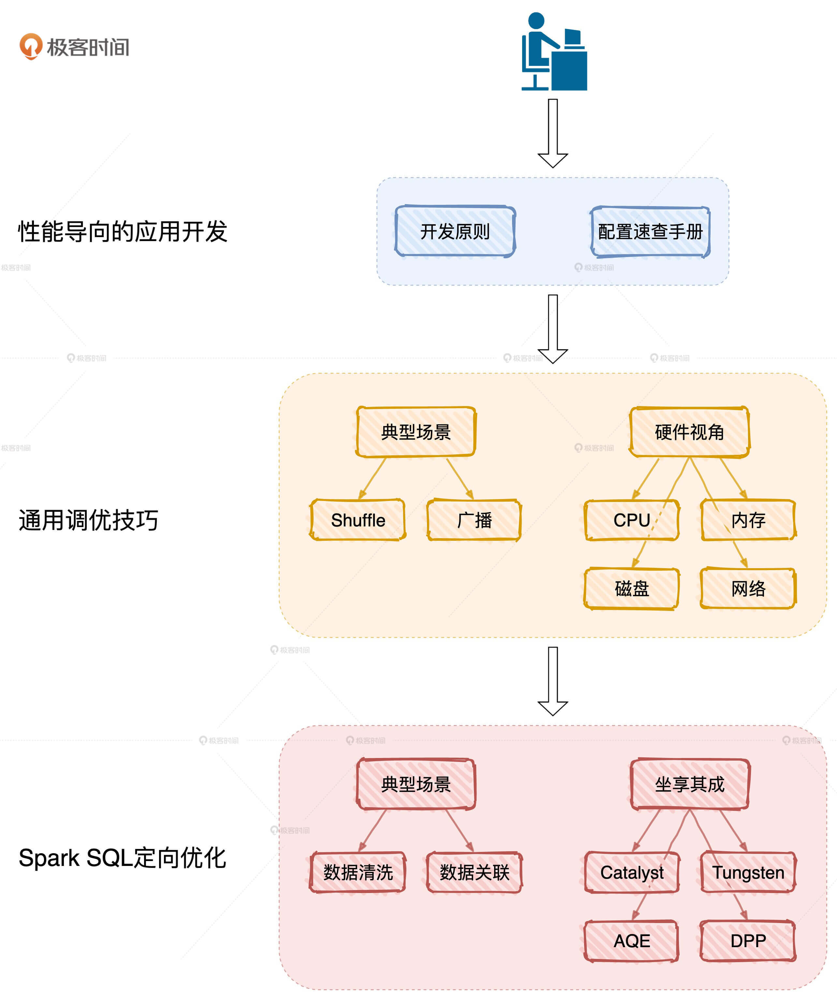
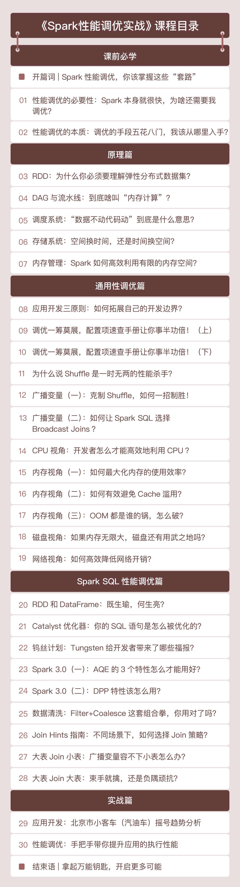

- 00 开篇词 Spark性能调优，你该掌握这些“套路”.md.html
- 01 性能调优的必要性：Spark本身就很快，为啥还需要我调优？.md.html
- 02 性能调优的本质：调优的手段五花八门，该从哪里入手？.md.html
- 03 RDD：为什么你必须要理解弹性分布式数据集？.md.html
- 04 DAG与流水线：到底啥叫“内存计算”？.md.html
- 05 调度系统：“数据不动代码动”到底是什么意思？.md.html
- 06 存储系统：空间换时间，还是时间换空间？.md.html
- 07 内存管理基础：Spark如何高效利用有限的内存空间？.md.html
- 08 应用开发三原则：如何拓展自己的开发边界？.md.html
- 09 调优一筹莫展，配置项速查手册让你事半功倍！（上）.md.html
- 10 调优一筹莫展，配置项速查手册让你事半功倍！（下）.md.html
- 11 为什么说Shuffle是一时无两的性能杀手？.md.html
- 12 广播变量（一）：克制Shuffle，如何一招制胜！.md.html
- 13 广播变量（二）：如何让Spark SQL选择Broadcast Joins？.md.html
- 14 CPU视角：如何高效地利用CPU？.md.html
- 15 内存视角（一）：如何最大化内存的使用效率？.md.html
- 16 内存视角（二）：如何有效避免Cache滥用？.md.html
- 17 内存视角（三）：OOM都是谁的锅？怎么破？.md.html
- 18 磁盘视角：如果内存无限大，磁盘还有用武之地吗？.md.html
- 19 网络视角：如何有效降低网络开销？.md.html
- 20 RDD和DataFrame：既生瑜，何生亮？.md.html
- 21 Catalyst逻辑计划：你的SQL语句是怎么被优化的？（上）.md.html
- 22 Catalyst物理计划：你的SQL语句是怎么被优化的（下）？.md.html
- 23 钨丝计划：Tungsten给开发者带来了哪些福报？.md.html
- 24 Spark 3.0（一）：AQE的3个特性怎么才能用好？.md.html
- 25 Spark 3.0（二）：DPP特性该怎么用？.md.html
- 26 Join Hints指南：不同场景下，如何选择Join策略？.md.html
- 27 大表Join小表：广播变量容不下小表怎么办？.md.html
- 28 大表Join大表（一）：什么是“分而治之”的调优思路？.md.html
- 29 大表Join大表（二）：什么是负隅顽抗的调优思路？.md.html
- 30 应用开发：北京市小客车（汽油车）摇号趋势分析.md.html
- 31 性能调优：手把手带你提升应用的执行性能.md.html
- Spark UI（上）深入解读Spark作业的“体检报告”.md.html
- Spark UI（下）：深入解读Spark作业的“体检报告”.md.html
- 期末考试 “Spark性能调优”100分试卷等你来挑战！.md.html
- 结束语 在时间面前，做一个笃定学习的人.md.html
- 捐赠
00 开篇词 Spark性能调优，你该掌握这些“套路”
你好，我是吴磊，欢迎和我一起探索 Spark 应用的性能优化。
2020年6月，Spark正式发布了新版本，从2.4直接跨越到了3.0。这次大版本升级的亮点就在于性能优化，它添加了诸如自适应查询执行（AQE）、动态分区剪裁（DPP）、扩展的Join Hints等新特性。
其实，在3.0版本发布之前，Spark就已然成为了分布式数据处理技术的事实标准。在数据科学与机器学习魔力象限中，Gartner更是连续3年（2018~2020）将Databricks（Spark云原生商业版本）提名为Market Leader。

自然而然地，Spark也成为了各大头部互联网公司的标配，在海量数据处理上，扮演着不可或缺的关键角色。比如，字节跳动基于Spark构建的数据仓库去服务几乎所有的产品线，包括抖音、今日头条、西瓜视频、火山视频等。再比如，百度基于Spark推出BigSQL，为海量用户提供次秒级的即席查询。
可以预见的是，这次版本升级带来的新特性，会让Spark在未来5到10年继续雄霸大数据生态圈。
而说到我和Spark的缘分，可以追溯到2014年。一次偶然的机会，我参与到了Spark的调研。深入研究之后，我对Spark高效的执行性能深深着迷，这也让我未来的职业发展都和Spark紧紧地绑在了一起。就这样，我从数据分析、数据挖掘领域，转移到了现在的商业智能和机器学习领域，一直不停地尝试探索数据中蕴含的核心价值。
目前，我在FreeWheel带领团队负责机器学习的应用与落地。我们所有已落地和正在启动的项目，都在使用Spark进行数据探索、数据处理、数据分析、特征工程和样本工程。除此之外，我们还会经常基于Spark在海量数据上进行模型训练和模型推理。
如果你也和我一样，正沿着数据规划自己的职业路径，那么精通Spark也必定是你的职业目标之一。
精通Spark，你需要一把叫做“性能调优”的万能钥匙
目前，Spark有海量批处理、实时流计算、图计算、数据分析和机器学习这5大应用场景，不论你打算朝哪个方向深入，性能调优都是你职业进阶必须要跨越的一步。

为什么这么说呢？原因很简单，对于这5大场景来说，提升执行性能是刚需。
图计算和机器学习往往需要上百次迭代才能收敛，如果没有性能保障，这类作业不可能完成计算。流计算和数据分析对于响应实时性的要求非常高，没有高效的执行性能，不可能做到在亚秒级完成处理。
相比其他场景，批处理对于执行效率的要求是最低的，但是，在日增数据量以TB、甚至PB为单位计数的当下，想要在小时级别完成海量数据处理，不做性能调优简直是天方夜谭。
因此，我认为这5大场景就像是5扇门，每扇门背后都别有洞天，而性能调优就像是一把“万能钥匙”。有了这把钥匙在手，你才能如入无人之境，去探索更广阔的世界。
为什么性能调优不能“照葫芦画瓢”？
其实，我身边很多开发人员也都意识到了这一点，他们会去网上搜集一些教程进行学习。但是，目前关于Spark性能调优的资料，大都不是很系统，或者只是在讲一些常规的调优技巧和方法。而对于一些大神分享的调优手段，我们往往“照葫芦画瓢”做出来的东西，也总是达不到预期的效果，比如：
- 明明都是内存计算，为什么我用了RDD/DataFrame Cache，性能反而更差了？
- 网上吹得神乎其神的调优手段，为啥到了我这就不好使呢？
- 并行度设置得也不低，为啥我的CPU利用率还是上不去？
- 节点内存几乎全都划给Spark用了，为啥我的应用还是OOM？
这些问题看似简单，但真不是一两句话就能说得清的。这需要我们深入Spark的核心原理，不断去尝试每一个API、算子，设置不同的配置参数，最终找出最佳的排列组合。
那么问题来了，这该怎么做呢？接下来，我就和你分享一下，我是怎么学习性能调优的。
刚刚接触Spark那会儿，我觉得它的开发效率是真高啊！MapReduce上千行代码才能实现的业务功能，Spark几十行代码就搞定了！
后来，随着客户要求的不断提高，以及我个人的“较真行为”，为了让应用能跑得更快，我几乎把所有的RDD API查了个遍，仔细研究每一个算子的含义和运行原理，汇总不同算子的适用场景，总结哪些算子会引入Shuffle，对比同类功能算子的差异与优劣势，比如map和mapPartitions，再比如groupByKey、reduceByKey和aggregateByKey。
除此之外，Spark官网的Configuration页面我也查阅了无数次，汇总与性能有关的配置项，不停地做对比实验，比较不同参数配置下的执行性能。遇到与认知不符的实验结果，就再回去反复咀嚼Spark的核心原理，从RDD和调度系统，到内存管理和存储系统，再到内存计算和Shuffle，如此往复，乐此不疲。
虽然失败的次数非常多，但成倍的性能提升带来的惊喜让我久久不能忘怀。后来，我就把我的经验分享给身边的同事，在帮助他们进行调优的过程中，我也有意识地把我接触到的案例整理了起来，从点到线、从线到面，我逐渐摸清了性能调优的脉络，最终总结出一套关于性能调优的方法论，也因此建立起了以性能为导向的开发习惯。

遵循这套方法论，开发者可以按图索骥地去开展性能调优工作，做到有的放矢、事半功倍。我希望在这个专栏里把它分享给你。
学得快，也要学得好
结合方法论，我把专栏划分为了3个部分：原理篇、性能篇和实战篇。
原理篇：聚焦Spark底层原理，打通性能调优的任督二脉
Spark的原理非常多，但我会聚焦于那些与性能调优息息相关的核心概念，包括RDD、DAG、调度系统、存储系统和内存管理。我会力求用最贴切的故事和类比、最少的篇幅，让你在最短的时间内掌握这5大概念的核心原理，为后续的性能调优打下坚实的基础。
性能篇：实际案例驱动，多角度解读，全方位解析性能调优技巧
我们刚才说了，Spark的应用场景非常多，主要分为海量批处理、实时流计算、图计算、数据分析和机器学习这5个。但在所有的子框架里，Spark对Spark SQL的倾斜和倚重也是有目共睹，所以性能篇我主要分两部分来讲。
一部分是讲解性能调优的通用技巧，包括应用开发的基本原则、配置项的设置、Shuffle的优化，以及资源利用率的提升。首先，我会从常见的例子入手，教你怎么在不改变代码逻辑的情况下快速提升执行能。其次，我会带你去归纳与执行效率相关的配置项。接着，针对Shuffle、数据关联这些典型场景，我们一起去分析有效的应对策略。最后，我们再从硬件视角出发，带你探讨如何最大化资源利用率，在整体上提升Spark的执行性能。
虽然，不同应用场景的开发API和运行原理都有所不同，但是性能调优的本质和方法论是一样的。因此，这类技巧不限定应用场景，适用于所有Spark子框架。
另一部分我会专注于数据分析领域，借助如Tungsten、AQE这样的Spark内置优化项和数据关联这样的典型场景，来和你聊聊Spark SQL中的调优方法和技巧。
首先，我会带你深入挖掘Tungsten、Catalyst优化器和Spark 3.0发布的诸多新特性，充分利用Spark已有的优化机制，让性能调优站到一个更高的起点上。接着，我会借助数据分析的典型场景案例，如数据清洗、数据关联、数据转换等等，带你case-by-case地去归纳调优的思路与方法。
值得一提的是，随着所有子框架的开发API陆续迁移到DataFrame，我们在每个子框架之上开发的应用，都将受益于Spark SQL的性能提升。换句话说，尽管这部分调优技巧围绕数据分析领域展开，但其中的思路和方法，也同样适用于其他子框架。
实战篇：打造属于自己的分布式应用
在实战篇，为了帮助你实践我们的方法论和调优技巧。我会以2011~2019的《北京市汽油车摇号》数据为例，手把手教你打造一个分布式应用，带你从不同角度洞察汽油车摇号的趋势和走向。我相信，通过这个实战案例，你对性能调优技巧和思路的把控肯定会有一个“质的飞跃”。
除此之外，我还会不定期地针对一些热点话题进行加餐：比如和Flink、Presto相比，Spark有哪些优势；再比如Spark的一些新特性，以及业界对于Spark的新探索。这也能帮助我们更好地面对变化，把握先机。

最后我想说，我一直希望把学习变成一件有趣又轻松的事情，所以在这个专栏里，我会用一个个小故事和实例，来帮助你理解Spark的核心原理，引导你建立以性能为导向的开发思维，以及从不同视角汇总性能调优的方法和技巧，让你像读小说一样去弄懂Spark。
我也期望，你能像小说里的主人公一样，利用“调优技巧和方法论”这本武功秘籍，一路过五关、斩六将，打败现实中层出不穷的开发问题，在职业发展中更上一层楼。
最后，欢迎你在这里畅所欲言，提出你的困惑和疑问，也欢迎多多给我留言，你们的鼓励是我的动力。让我们一起拿起性能调优这把万能钥匙，去开启全新的Spark职业生涯吧！
© 2019 - 2023 Liangliang Lee. Powered by gin and hexo-theme-book.